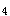

A.磺胺药
B.青霉素
C.甲硝唑
D.红霉素
E.四环素
参考答案：B
A.生理盐水
B.10%硝酸银溶液
C.5％盐水
D.3%双氧水
E.3％碘酊
参考答案：D
A.肺部感染
B.心脏损害
C.窒息
D.脱水、酸中毒
E.休克
参考答案：C
A.严格隔离
B.病室阳光充足
C.治疗护理操作应在使用镇静剂前30分钟内进行
D.伤口敷料用后高压灭菌
E.各种护理不要集中处理以免加重刺激
参考答案：A
A.避免强光照射
B.保持病室安静
C.按时使用镇静剂
D.护理措施要集中进行
E.鼻饲流质饮食
参考答案：E
A.预防上消化道出血
B.抗感染
C.镇静
D.抗水肿，降颅压
E.降血压
A.体液不足
B.自理缺陷
C.疼痛
D.恐惧
E.体温过高
A.1:100苯扎溴铵（新洁尔灭）
B.1:5000高锰酸钾
C.1:500高锰酸钾
D.1:5000苯扎溴铵（新洁尔灭）
E.1:500苯扎溴铵（新洁尔灭）
A.8～10天
B.8～12天
C.5～7天
D.2～3周
E.10～14天
题目解析：宫颈癌根治术，通常按医嘱于术后48-72小时取出引流管，术后7-14日拔除尿管。
A.肌内注射术前针
B.测量生命体征
C.富颈及穹隆部涂甲紫（龙胆紫）
D.将贵重物品交给护士
E.禁食水
A.盐水
B.5%醋酸
C.蛋清水
D.白醋
E.牛奶
参考答案：B C D E
A.现有的健康问题
B.与问题产生有关的症状
C.潜在的健康问题
D.问题产生的原因
E.潜在问题的症状和体征
参考答案：A B C D
A.去甲肾上腺素
B.毒毛花苷K(毒毛旋花子苷K)
C.毛花苷C
D.硝酸甘油
E.利多卡因
参考答案：A D E
A.享受健康
B.隐私保密
C.对医院规章制度提出改进意见
D.自由选择
E.知情、同意
参考答案：A B D E
A.治疗疾病，输入药物
B.维持血压，增加血容量
C.补充水分与电解质
D.补充营养，供给热量
E.纠正酸碱平衡
参考答案：A B C D E
A.社会性需要
B.精神需要
C.物质需要
D.心理需要
E.生理性需要
参考答案：B C
A.倒同一患者的不同药液时，不需洗净量杯
B.药液不足1ml需用滴管吸取计量
C.同时有数种水剂时应分别倒入不同药杯
D.量取止咳糖浆时，可先在药杯中加入少量冷开水
E.先摆水剂，再摆固体药物
A.护理是助人的
B.护理的目的是协助个人促进健康
C.护理满足人的各种需要
D.护理必须应用科学的方法工作
E.护理学是一门独立的专科
A.治疗肺癌
B.预防呼吸道感染
C.湿化呼吸道
D.改善通气功能
E.治疗呼吸道感染
A.鼻饲过程中避免注入空气
B.每次鼻饲量<200ml，间隔时间不少于2小时
C.新鲜果汁与奶液应分开灌入，以防凝块
D.长期鼻饲管者应每周更换鼻饲管
E.长期鼻饲者，应每天进行口腔护理
A.维生素缺乏
B.口腔粘膜干燥
C.机体抵抗力下降
D.分解代谢增加
E.唾液分泌减少
参考答案：B C E
A.胸闷烦躁
B.吸气时间缩短
C.指甲发绀
D.鼻翼扇动
E.三凹征
参考答案：A C D E
A.每个容器只能放一把无菌持物镊
B.无菌持物镊只能夹取无菌物品
C.使用时保持前端向下，不可倒转向上
D.启用后有效时间为4小时
E.取镊时，不可触及容器口的边缘
题目解析：①拿取时，手固定在持物钳上端的两个圆环或镊子的上1/2处。 ②一个容器只浸泡一把持物器械，以免相互碰撞而污染。 ③取出、放回时前端闭合，不可触及容器口缘及液面以上的部位。 ④钳、镊的前端应始终向下，不能水平，更不能倒转，以免液体回流污染持物器械。 ⑤用后立即放回，并打开轴关节，以便充分接触消毒液。 ⑥远处使用要连同容器一同搬移，不可只拿持物器械。 ⑦换药时，不可用持物镊直接夹取油纱条或换药、消毒皮肤，应用持物镊再夹取一把镊子或止血钳。
A.减轻疼痛
B.防止腹胀
C.防止手术后出血
D.利于腹腔引流
E.减少伤口缝合张力
A.全麻后的病员
B.瘫痪病员
C.危重病员
D.监护病员
E.大手术患者
A.安置于重危病室
B.备好急救器械和药品
C.配合医生进行抢救
D.作入院介绍
E.通知医生做好抢救准备
参考答案：A B C E
A.胸骨骨折
B.大血管损伤
C.肝破裂
D.胃内容物反流
E.肋骨骨折
A.无机物
B.分解者
C.各级消费者
D.太阳能
E.生产者
题目解析：生态系统的组成成分：非生物的物质和能量、生产者、消费者、分解者。
A.密切观察病情变化
B.定期进行血气分析和电解质测定
C.预防和控制感染，做好消毒工作
D.注意呼吸机工作是否正常
E.保持呼吸道通畅
题目解析：动脉血气分析是监测机械通气治疗效果最重要的指标之一，定期监测电解质可判断患者是否有电解质紊乱的现象。
A.规范化
B.程序化
C.现代化
D.利益化
E.标准化
参考答案：A C E
A.15%
B.10%
C.8%
D.20%
E.25%
A.室性心动过速
B.室上性心动过速
C.心室颤动
D.窦性心动过速
E.心房颤动
A.向上拉动胃管
B.少量生理盐水低压冲洗
C.拔除更换胃管
D.多量生理盐水高压冲洗
E.向下推送胃管
A.降低死亡率、住院率
B.减轻心脏后负荷
C.减轻心脏前负荷
D.改善呼吸困难
E.增强心肌收缩力
题目解析：β受体阻断药主要用于拮抗代偿机制中交感神经兴奋性增强的效应，抑制心室重塑，长期应用能显著改善预后，从而提高病人运动耐量，降低死亡率，尤其是猝死率。
A.1～3cm，80～100次／分
B.4～5cm，80～100次／分
C.2.5～4cm，80～100次／分
D.2.5～4cm，100次／分
E.4～5cm，100次／分
A.妊娠5～7周
B.妊娠14～16周
C.妊娠11～13周
D.妊娠8～10周
E.妊娠18～20周
A.坚持服药
B.营养充足
C.有家属的照顾
D.使患者心情愉快
E.居住环境安静
A.倡导、赋权、协调
B.控制、赋予、倡导
C.提倡、赋权、协助
D.控制、赋权、协调
E.提倡、协调、控制
A.大脑灰质
B.脑干上行性网状激活系统
C.脑干下行性网状激活系统
D.小脑
E.大脑皮质
A.减少晨僵发生
B.保持关节功能位
C.避免关节废用
D.防止疾病复发
E.防止关节畸形
A.先挂号，然后预检分诊、诊疗
B.先预检分诊，然后诊疗、挂号
C.先挂号，然后就诊治疗
D.先预检分诊，然后进行治疗
E.先预检分诊，然后挂号、诊疗
A.角膜反射恢复
B.正确回答问题
C.睁眼
D.呻吟
E.咳嗽、咳痰
A.青枝骨折
B.斜行骨折
C.横行骨折
D.嵌插骨折
E.粉碎性骨折
A.常见疾病防治知识
B.残疾人的自我功能保健和康复知识
C.中老年人保健知识
D.儿童保健知识
E.妇女保健知识
A.月经来潮前1天
B.月经干净后3～7天
C.月经干净后1天
D.月经来潮前3～7天
E.非月经期的任何时间
A.咀嚼肌
B.膈肌
C.四肢肌
D.颈项肌
E.面肌
A.剧烈腹痛
B.毒素吸收及血容量减少
C.呼吸循环功能不全
D.胃肠道渗出液刺激
E.大量呕吐失液
A.血尿、肿块和疼痛
B.血尿、发热和疼痛
C.肿块、发热和高血压
D.肿块、血沉快和高血压
E.血尿、肿块和高血压
A.为保持关系，随声附和对方
B.应先肯定对方值得肯定的一面，然后以建议的方式指出问题的所在
C.中断交谈，不再理对方
D.为避免冲突，应对对方不正确的言行或存在的问题不予纠正
E.严厉地指出对方的错误之处
A.红斑和视物模糊
B.腹绞痛和腹泻
C.耳鸣和高血压
D.口于和皮疹
E.口咽部真菌感染
A.密切观察宫缩及阴道流血情况
B.贫血产妇不影响母乳喂养
C.产后定期复查
D.应用抗生素预防感染
E.口服补血药物应餐中或餐后服用
题目解析：指导母乳喂养，对于因重度贫血不宜哺乳者，详细讲解原因，并指导产妇及家人掌握人工喂养的方法。采取正确的回奶方法，如口服生麦芽冲剂或芒硝外敷乳房。
A.3
B.5
C.2
D.1
E.4
A.出生时肾单位数量已经达成人水平
B.新生儿对药物的排泄功能好
C.肾小球滤过率平均为每分钟20ml/1.73m
D.小儿肾功能一般到1～1.5岁达到成人水平
E.肾小管的功能不够成熟，对水和钠的负荷调节较差
A.发病原因
B.首发症状
C.贫血程度的不同
D.出血症状的不同
E.白血病细胞的成熟程度
题目解析：白血病按病程和白血病细胞的成熟度分为急性和慢性白血病。急性白细胞的细胞分化停滞在较早阶段，慢性白血病则停滞在较晚阶段。
A.U波
B.T波
C.P波
D.QRS波
E.PR间期
A.1：4:8
B.1：3：6
C.1：2:8
D.1：3：8
E.1：4：7
A.70mmHg
B.40mmHg
C.60mmHg
D.50mmHg
E.80mmHg
A.婴儿的胃呈水平位
B.婴幼儿肝脏右肋下可及1～2cm
C.足月新生儿出生时即有较好的吸吮能力
D.新生儿和婴儿的食管呈漏斗状
E.2个月小儿可试喂淀粉类食物
A.胰蛋白酶、脂肪酶、糜蛋白酶、淀粉酶、羧基肽酶
B.胰蛋白酶、糜蛋白酶、羧基肽酶、脂肪酶、淀粉酶
C.脂肪酶、胰蛋白酶、淀粉酶、糜蛋白酶、羧基肽酶
D.羧基肽酶、糜蛋白酶、脂肪酶、胰蛋白酶、淀粉酶
E.糜蛋白酶、胰蛋白酶、脂肪酶、羧基肽酶、淀粉酶
A.预防呼吸道感染
B.戒烟
C.呼吸功能锻炼
D.体位引流
E.去除外界刺激因素
A.责权一致
B.职务明确
C.人员素质
D.公平竞争
E.用人之长
A.基础体温呈单相
B.宫颈黏液有羊齿状结晶
C.子宫内膜呈分泌期变化
D.阴道脱落细胞反映为轻度雌激素影响
E.子宫内膜呈增殖期变化
A.纤维支气管镜检见支气管黏膜干燥、萎缩
B.仅有早晨咳嗽及咳痰
C.仅有反复咯血，一般无咳嗽、咳痰
D.干咳为主
E.病变局限于上叶
A.剑突与脐连线的中间位置
B.脐上1横指
C.脐下1横指
D.脐水平
E.剑突下3横指
A.提供所患疾病的病因、发病机制等知识
B.指导继续用药和定期复查等注意事项
C.介绍住院制度、探视制度
D.出院后慢性疾病病人长期健康指导
E.在报纸杂志上开辟专题栏目
A.感染
B.贫血
C.药物的副反应
D.颅内出血
E.口腔溃疡
A.保健行为
B.预警行为
C.避开有害环境行为
D.日常健康行为
E.戒除不良嗜好行为
A.职业人群健康教育、疾病防治健康教育、社区健康教育等
B.职业人群健康教育、疾病防治健康教育、环境保护健康教育等
C.职业人群健康教育、医院健康教育、社区健康教育等
D.疾病防治健康教育、营养健康教育、社区健康教育等
E.疾病防治健康教育、营养健康教育、环境保护健康教育等
A.定时局部消毒
B.保持创面干燥，促使痂皮形成
C.全身使用抗生素
D.创面上无覆盖物
E.定期留渗液作细菌培养
A.血T、T降低，TSH正常
B.血T、T升高，TSH降低
C.血T、T升高，TSH正常
D.血T、T正常，TSH升高
E.血T、T正常，TSH降低
A.应用雌激素对症止痒
B.灌洗后甲硝唑药片塞入阴道
C.用5%甲紫涂阴道壁
D.口服伊曲康唑200mg，每日1次×3天
E.10％碳酸氢钠液阴道灌洗每日1次×10天
A.气管内插管
B.肾上腺素
C.面罩吸氧
D.胸外心脏按压
E.正压通气复苏
A.骨肉瘤
B.骨髓炎
C.骨巨细胞瘤
D.骨结核
E.骨转移癌
A.睡眠不佳时，血压可稍降低
B.中年以前，女子略高于男子
C.寒冷环境中血压上升
D.高热环境中血压上升
E.清晨血压高于傍晚
A.他巴唑
B.普萘洛尔(心得安)
C.地西泮(安定)
D.复方碘化钾溶液(卢戈液)
E.丙基硫氧嘧啶
A.大量呕吐致液体丢失
B.肠内积液刺激
C.腹胀引起呼吸困难
D.腹膜吸收大量毒素，血容量减少
E.剧烈疼痛
A.不孕
B.阴道排液
C.白带增多
D.下腹坠痛
E.下腹包块
A.针尖
B.针栓
C.针梗
D.活塞
E.乳头
A.病室空气清新
B.预防感染
C.定期复查肾功能
D.无盐低蛋白饮食
E.详细记录出入量，'量出为入'
A.逐渐加重的呼吸困难
B.经常感染发热
C.剧烈咳嗽
D.反复发绀
E.咯多量脓痰
A.预防泌尿道感染
B.观察呼吸肌有无麻痹
C.鼓励多饮水
D.鼓励咳嗽排痰
E.勿搬动瘫痪肢体
A.体内HCG的含量
B.病人身体好坏
C.葡萄胎病变有无超出子宫范围
D.子宫增大程度
E.阴道流血出现的迟早
A.前列腺增生
B.泌尿系肿瘤
C.泌尿系感染
D.泌尿系结核
E.泌尿系结石
A.AC
B.HS
C.PC
D.CO
E.DC
A.常有腹膜刺激征
B.常伴有白带增多
C.腹痛位于下腹，盆部
D.先发热后腹痛
E.腹痛及压痛点不固定不明确
A.病毒性感染
B.过敏性疾病
C.皮肤病
D.化脓菌感染
E.寄生虫病
A.髂嵴外侧三横指处
B.髂前上棘和尾骨联线的外1／3处
C.髂前上棘外侧三横指处
D.髂嵴和骶骨联线的外1／3处
A.皮肤黏膜出血
B.常有发热
C.儿童多见
D.关节痛
E.便血、尿血
A.防止刺激性强的药液溢出血管外
B.不要在一个部位反复穿刺
C.根据病情，掌握注药的速度
D.不可在静脉瓣处进针
E.长期给药，应由近心端到远心端选择血管
A.ALP300U／L
B.LDH等
C.AFP>200gg／L持续8周
D.ALT>40U／L持续8周
E.γ-GT=90U／L
A.4h禁食，2h禁水
B.8h禁食，6h禁水
C.10h禁食，4h禁水
D.6h禁食，4h禁水
E.12h禁食，4～6h禁水
A.经他人传递
B.戴手套后拿取
C.用镊子夹取
D.从上面中间抓取
E.掀开抓取
A.血细菌培养阳性
B.有原发感染病灶
C.白细胞计数增加
D.全身中毒症状
E.起病急骤，寒战高热
A.做好口腔护理
B.严密观察病情变化
C.给予足够的营养和水分
D.按严密隔离原则处理
A.月经未来潮无需避孕
B.产后24h后即可在室内随意走动
C.不哺乳者可药物避孕
D.哺乳者用工具避孕
E.产后10个月可做胸膝卧位，以防子宫后倾
A.1954年
B.1934年
C.1956年
D.1918年
E.1907年
A.尿量每小时30ml以上
B.神志由烦躁转为淡漠
C.中心静脉压小于5cmH2O
D.脉压继续减小
A.下午2时20分
B.中午12时20分
C.下午1时20分
D.上午11时
E.下午2时
A.喜伤心
B.思伤脾
C.怒伤肝
D.忧伤肺
E.恐伤肾
A.胰岛素分泌绝对不足
B.老年人肾小球排糖少
C.吃糖过多短期内无法排出
D.肝糖原快速分解释放大量糖入血
E.老年人肾小管重吸收糖多
微信关注